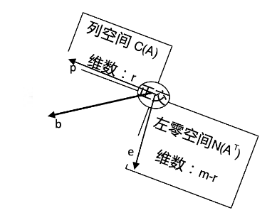

线性代数笔记(十六)——投影矩阵和最小二乘
在上一讲的基础上继续深度展开。
投影矩阵和最小二乘
上一讲已经渗透了投影矩阵的概念，并以简单的线性回归作为示例，对最小二乘法和投影矩阵加以联系。
投影矩阵
投影矩阵\(P=A(A^TA)^{-1}A^T\)，其物理意义是将向量\(b\)投影到\(A\)的列空间中。
投影有两种极限情况：
- 如果\(b\)本身就在\(A\)的列空间中，那么\(Pb=b\)，此时\(P=I\)。
- 如果\(b\)垂直于\(A\)列空间，此时\(Pb=0\)，根据正交补的概念，\(b\)是\(A\)左零空间的向量，有\(A^Tb=0\)。
综上可以归纳：任意向量\(b\)都可以拆解成两个分量，一个分量\(p\)在\(A\)的列空间中，另一分量\(e\)在\(A\)的左零空间中。

\(p\)是投影矩阵\(P\)作用于\(b\)在\(A\)列空间的投影得到的分量，同理，如果想要投影到左零空间，那么投影矩阵就应该是\(I-P\)。
因为\(p=Pb, e=b-p\)，所以\(e=b-Pb=(I-P)b\)。
再探最小二乘
还是回到例题：平面上三个点\((1,1), (2,2), (3,2)\)做线性回归。
上一节我们分别通过微积分和投影矩阵两种方法进行了拟合，最终发现所求解的方程完全一致。实际上，在微积分求解法中，我们本质上算的是误差向量\(e1,e2,e3\)模的平方和，为了让平方和最小，通过求导数找极值的方式列出了求解方程。而在投影法中，投影的本质其实就是将向量\(b\)投影到\(A\)列空间中最近的一点，换句话说，就是把\(p1,p2,p3\)分别投影到所需求解的直线上去。
因此，微积分算最小二乘(least square)和投影矩阵具有相同的内核，也就不难理解为何二者最终需求解的解方程组殊途同归了。
最终我们求得\(y=\frac{1}{2}x+\frac{2}{3}\)，得到: \[ b=\begin{bmatrix}1\\ 2\\ 2\end{bmatrix}, p=\begin{bmatrix}\frac{7}{6}\\ \frac{10}{6} \\ \frac{13}{6}\end{bmatrix},e=\begin{bmatrix}-\frac{1}{6}\\ \frac{2}{6}\\ -\frac{1}{6}\end{bmatrix} \]
简单验证一下，可以发现\(e\)与\(p\)垂直。
标准正交基
互相垂直的各列一定是线性无关的。于是，我们可以找到空间里的一组基，它们彼此相互垂直，这组基我们称之为正交基。
参考三维直角坐标系，我们常常选用\(\begin{bmatrix}1\\ 0\\ 0\end{bmatrix},\begin{bmatrix}0\\ 1\\ 0\end{bmatrix},\begin{bmatrix}0\\ 0\\ 1\end{bmatrix}\)作为标准基，也就是对应\(x,y,z\)三个轴。
- 由于彼此相互垂直，故为一组正交基。
- 由于每个基向量都是单位向量，故称作标准正交基。
当然，标准正交基不止这一种，例如二维空间的标准正交基还可以是：\(\begin{bmatrix}\cos\theta\\ \sin\theta\end{bmatrix},\begin{bmatrix}-\sin\theta\\ \cos\theta\end{bmatrix}\)。